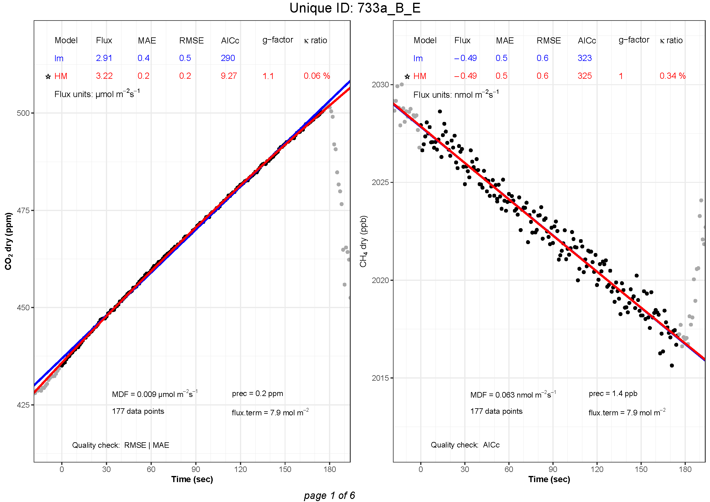

# best.flux
criteria = c("MAE", "AICc", "g.factor", "MDF")
CO2_best <- best.flux(CO2_flux, criteria)
CH4_best <- best.flux(CH4_flux, criteria)
# flux.plot
plot.legend = c("MAE", "RMSE", "AICc", "k.ratio", "g.factor")
plot.display = c("MDF", "prec", "nb.obs", "flux.term")
quality.check = TRUE
CO2_plots <- flux.plot(CO2_best, manID.UGGA, "CO2dry_ppm", shoulder=20,
plot.legend, plot.display, quality.check)
CH4_plots <- flux.plot(CH4_best, manID.UGGA, "CH4dry_ppb", shoulder=20,
plot.legend, plot.display, quality.check)Visual inspection
Finally, after finding the best flux estimates, the user can plot the results and visually inspect the measurements using the function flux.plot and save the plots as pdf using flux2pdf.
flux.plot
Usage
Note
Code chunks under Usage sections are not part of the demonstration. They are meant to show you how to use the arguments in the function.
flux.plot(
flux.results,
dataframe,
gastype,
shoulder = 30,
plot.legend = c("MAE", "AICc", "k.ratio", "g.factor"),
plot.display = c("MDF", "prec"),
quality.check = TRUE,
flux.unit = NULL,
flux.term.unit = NULL,
best.model = TRUE,
p.val.disp = "round",
side = "left",
conversion.factor = 1
)Arguments
| Argument | Description |
|---|---|
flux.results |
a data.frame; output from the function best.flux |
dataframe |
a data.frame containing gas measurements (see gastype below) and the following columns: UniqueID, Etime and flag (same dataframe as used with the function goFlux). chamID may be used instead of UniqueID. |
gastype |
character string; specifies which column was used for the flux calculations. Must be one of the following: “CO2dry_ppm”, “COdry_ppb”, “CH4dry_ppb”, “N2Odry_ppb”, “NO2dry_ppb”, “NOdry_ppb”, “NH3dry_ppb” or “H2O_ppm”. |
shoulder |
numerical value; time before and after measurement in observation window (seconds). Default is 30 seconds. |
plot.legend |
character vector; specifies which parameters should be displayed in a legend above each plot. “flux” is always displayed. A maximum of 6 parameters can be displayed in the legend (including “flux”). Chose up to five extra parameters from the following: “MAE”, “RMSE”, “AICc”, “SErel”, “SE”, “r2”, “LM.p.val”, “HM.k”, “k.max”, “k.ratio” and “g.factor”. Default is plot.legend = c("MAE", "AICc", "k.ratio", "g.factor"). |
plot.display |
character vector; specifies which parameters should be displayed on the plot. Choose from the following: “C0”, “Ci”, “cham.close”, “cham.open”, “crop”, “MDF”, “nb.obs”, “flux.term” and “prec”. Default is plot.display = c("MDF", "prec"). |
quality.check |
logical; if quality.check = TRUE, the column quality.check (output from the function best.flux) is displayed below the plot. |
flux.unit |
character string; flux units to be displayed on the plots. By default, the units are µmol m-2s-1 (if initial concentration is ppm, e.g. CO2dry_ppm) and nmol m-2s-1 (if initial concentration is ppb, e.g. CH4dry_ppb). For example, one may want to use nmol kg-1h-1 for incubated soil samples. In such a case, write flux.unit = "nmol~kg^-1*h^-1". |
flux.term.unit |
character string; units for the flux term to be displayed on the plots. By default, the units are mol m-2: flux.term.unit = "mol~m^-2" |
best.model |
logical; if best.model = TRUE, display a star sign next to the best model selected by the function best.flux. |
p.val.disp |
character string; indicates how the p-value should be displayed in the legend above the plot. Choose one of the following: “star”, “round”, “value”. |
side |
character string; choose a side to display C0 and Ci values. By default, they are displayed on the left side of the plot. |
conversion.factor |
numerical value; factor to multiply flux values by for unit conversion. Default is 1 (no conversion). For example, use 3600 to convert from per-second to per-hour. When using a conversion factor other than 1, you should also specify flux.unit and flux.term.unit to match the converted units, so that both the flux and flux term labels are correct in the plots. |
Details
In flux.results, one may choose to use the output from the goFlux function instead. However, in that case, any element produced by the function best.flux cannot be displayed on the plots. In plot.legend, one may choose to display up to five additional parameters in a legend above the plots. Some parameters are displayed for both the linear model (LM.flux) and the non-linear model (HM.flux): Mean Absolute Error (MAE), Root Mean Square Error (RMSE), Aikaike’s Information Criterion corrected for small sample size (LM.AICc), Standard Error (SE), relative Standard Error (SErel), and coefficient of determination (r2). The p-value (LM.p.val) is displayed for the linear model only. The kappa (HM.k), kappa-max (k.max), kappa ratio (k.ratio) and g-factor (g.factor) are displayed for the Hutchinson and Mosier model only. One may choose to display no additional parameter with plot.legend = NULL. In plot.display, one may chose to display some parameters on the plot: The initial gas concentration (C0) for both models, the assumed concentration of constant gas source below the surface (Ci) calculated from the Hutchinson and Mosier model, the number of observations (nb.obs) flagged, the Minimal Detectable Flux (MDF), the flux term (flux.term), the instrument precision (prec), the chamber closure (cham.close) and opening (cham.open) (indicated with a green star), and the data points between chamber closure and opening that have been removed (crop) (indicated in light red). For manual chamber measurements, because there is no automatic chamber closure and opening, no green stars can be displayed. In addition, crop is only relevant if data points have been removed with the function crop.meas() (this function is not available yet). One may choose to display none of these parameters with plot.display = NULL. The order in which prec, flux.term, MDF and nb.obs are put in plot.display = c() decides the order in which they are displayed at the bottom of the plot. In flux.unit, remember to multiply the flux results with an appropriate factor to convert the results from a unit to another. If kilograms of soil were used to calculate the fluxes (see the details section of the function goFlux), the units would be µmol kg-1s-1. To convert the units to µmol kg-1h-1 instead, one would need to multiply the flux results by 3600 to convert from seconds to hours. To print non-ASCII characters use Unicode. For example, to print the Greek letter “mu” (µ), use the Unicode \u00B5: flux.unit = "\u00B5mol~kg^-1*h^-1". In p.val.disp, if p.val.disp = "star", the p-values will be displayed as star symbols (asterisks) as follows: , or for p-values of p < 0.001, p < 0.01 and p < 0.05, respectively. If p.val.disp = "round", the p-values are rounded to p < 0.001, p < 0.01 and p < 0.05. If p.val.disp = "value", the actual values are displayed, rounded to two significant numbers. In gastype, the gas species listed are the ones for which this package has been adapted. Please write to the maintainer of this package for adaptation of additional gases.
Examples
data(manID.UGGA)
CO2_flux <- goFlux(manID.UGGA, "CO2dry_ppm")
criteria <- c("MAE", "AICc", "g.factor", "MDF")
CO2_best <- best.flux(CO2_flux, criteria)
CO2_plots <- flux.plot(
flux.results = CO2_best, dataframe = manID.UGGA,
gastype = "CO2dry_ppm", quality.check = TRUE,
plot.legend = c("MAE", "AICc", "k.ratio", "g.factor"),
plot.display = c("Ci", "C0", "MDF", "prec", "nb.obs", "flux.term"))Usage tips
Tip
To lighten your script, you can define arguments outside a function by storing their value in an object that is then used in the function instead. However, remember to use the arguments in the same order as they are required in the function.
This trick can help you reduce repetition and mistakes in your script.
TipTip: Combine all gases in one pdf
The function flux.plot creates a list of plots, one per UniqueID. Multiple lists (e.g. one per gastype) can be combined to save all plots together with the flux2pdf function.
# Combine plot lists into one list
plot.list <- c(CO2_plots, CH4_plots)Value
The function returns a list of plots, one per UniqueID, drawn from flux results (output from the functions goFlux and best.flux).
flux2pdf
The list of plots created with flux.plot can now be saved as a pdf using the function flux2pdf.
Usage
Note
Code chunks under Usage sections are not part of the demonstration. They are meant to show you how to use the arguments in the function.
flux2pdf(plot.list, outfile = NULL, width = 11.6, height = 8.2)Arguments
| Argument | Description |
|---|---|
plot.list |
a list of plots; output from the function flux.plot. |
outfile |
a character string indicating the full name of the pdf output file (including the path and ‘.pdf’ extension). If outfile is not provided, it will be saved in R’s temporary directory (tempdir()), with the name of the plot.list. |
width |
numerical value; width of the pdf page. Default is 11.6 inches. |
height |
numerical value; height of the pdf page. Default is 8.2 inches. |
Examples
data(manID.UGGA)
CO2_flux <- goFlux(manID.UGGA, "CO2dry_ppm")
criteria <- c("MAE", "g.factor", "MDF", "SErel")
CO2_best <- best.flux(CO2_flux, criteria)
CO2_plots <- flux.plot(
flux.results = CO2_best, dataframe = manID.UGGA,
gastype = "CO2dry_ppm", quality.check = FALSE,
plot.legend = c("MAE", "RMSE", "k.ratio", "g.factor", "SErel"),
plot.display = c("Ci", "C0", "MDF", "prec", "nb.obs", "flux.term"))
flux2pdf(CO2_plots)Here is an example of how the plots are saved as pdf:
